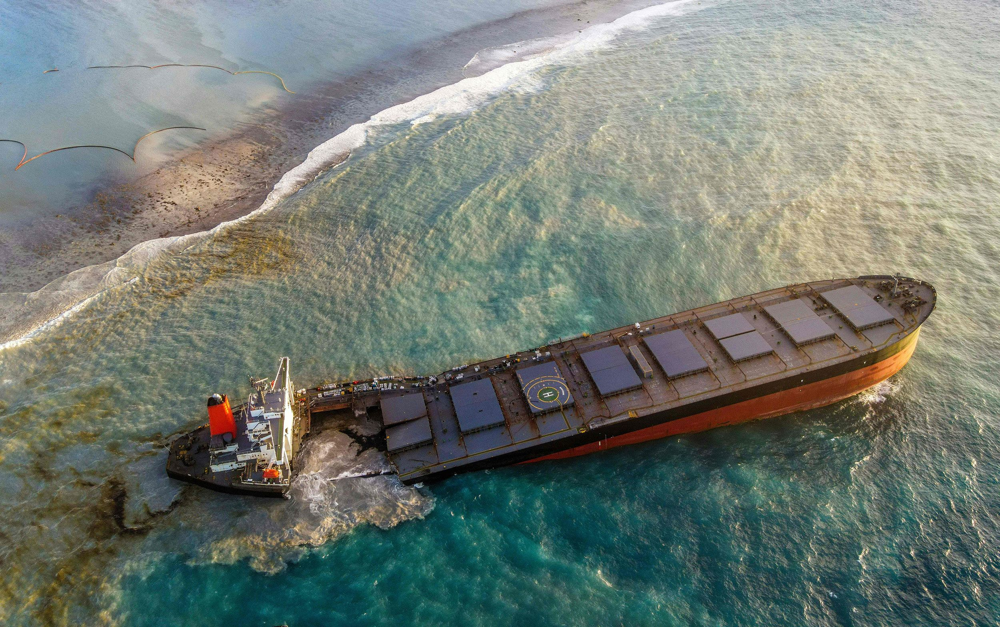

Poaching of turtles
Turtle poaching, the illegal act of capturing and killing turtles for various purposes, has emerged as a significant threat
to global turtle populations. Fuelled by commercial exploitation, cultural practices, and the illegal wildlife trade, this
destructive activity has led to a severe reduction in turtle populations worldwide. With their slow reproductive rates
and vulnerability to environmental changes, turtles are particularly susceptible to the devastating consequences of
poaching.
Ways we can prevent poaching is, governments should enact and enforce strict laws and regulations to protect turtles
from poaching. Secondly raising awareness about the importance of turtle conservation is crucial in preventing poaching.
Conducting educational campaigns, workshops, and outreach programs can help educate local communities, fishermen,
and consumers about the ecological significance of turtles and the negative impacts of poaching. Finally, Engaging
and involving local communities that reside near turtle habitats is essential
Ship oil damages

Ship oil spills can have detrimental effects on turtle populations and their habitats.When a ship oil
spill occurs, the oil can spread over large areas of the water surface, including coastal regions and important turtle habitats
such as nesting beaches and foraging grounds.These toxins can cause organ damage, impair immune systems, and disrupt vital
physiological processes, ultimately leading to illness, reduced reproductive success, and mortality.
Ways to prevent ship oil damages for turtles are, implement and enforce stringent maritime regulations and policies to prevent oil spills. Secondly,
invest in advanced navigation technologies and systems to enhance vessel safety and reduce the risk of accidents that may result in oil spills.
Finally, Raise public awareness about the environmental consequences of ship oil spills and the importance of protecting marine ecosystems, including turtle habitats.
slaughtered for eggs and shells

Turtle eggs are a crucial component of their reproductive cycle. When turtle eggs are harvested and consumed, the
number of hatchlings that reach adulthood is significantly reduced.Turtle eggs play a crucial role in maintaining the ecological balance
of coastal ecosystems. The harvesting of turtle shells for their ornamental value has had a significant impact on turtle populations. The
demand for turtle shell products, such as jewelry, accessories, and traditional crafts, drives illegal trade and poaching activities.
Ways to prevent ship oil damages for turtles are, governments should establish and enforce strict legislation that explicitly prohibits the
harvesting, trade, and consumption of turtle eggs and shells. Secondly,
implement monitoring programs to detect and prevent egg and shell harvesting.
Finally, engage with local communities residing near turtle nesting beaches and involve them in conservation efforts.